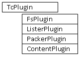

Provided interface allows to create Total Commander plugins using .NET supporting languages.
This product is provided under the MIT License.
If you are .NET developer and have a good idea for Total Commander plugin - provided
.NET Interface is the right choice for you.
With this interface you can concentrate on the main functionality of your plugin
without having to worry about most of mundane tasks of TC plugin building.
Main features:
Hereinafter term plugin will be used in two different contexts:
Provided interface allows creating managed plugins using .NET Framework version 4.0 and higher.
If Microsoft Visual Studio is your development tool, you have to use version 2010 or higher to work with this interface.
If you need to create TC plugin using earlier .NET Framework version, download previous version of this interface (1.3).
Provided interface uses some .NET Framework and other utilities in its work.
Paths to these utilities depend on developer computer and have to be setup properly.
WARNING: Please set utilities' paths in provided interface corresponding to
your computer in the following script and configuration files:
| ReadMe.html | This file |
| license.txt | File with the MIT License text. |
| dotNetPluginMethods.xlsx |
Excel spreadsheet with description of each TC plugin method and specifics of their
implementation in managed plugins.
Also it contains description of all settings used for plugin configuration. |
This folder contains files required for plugin developer to create and debug new
managed plugins:
Assemblies in this folder were compiled in Debug configuration.
| TcPluginInterface.dll | TC plugin interface assembly; contains interfaces and base classes for TC plugins. |
| TcPluginInterface.pdb | Debugging information for above assembly. |
| TcPluginTools.dll | TC plugin utility assembly; contains classes for plugin loading, callbacks and error handling. |
| TcPluginTools.pdb | Debugging information for above assembly. |
| GAC_Install.bat | Script to install core assemblies into the GAC (Global Assembly Cache). The assemblies are installed into CRL4 cache located in the %windir%\Microsoft.NET\assembly folder. |
| GAC_Uninstall.bat | Script to remove core assemblies from the GAC. |
| Totalcmd.exe.config | Total Commander configuration file; it contains tracing settings for new plugin debugging. |
| WrapperBuilder.exe | Console program to build plugin wrapper DLL that exports required TC plugin methods. |
| WrapperBuilder.exe.config | WrapperBuilder configuration; it defines paths to some .NET Framework utilities on developer's computer. |
| WfxWrapper.dll | Template assembly for TC File System plugin wrapper. |
| WlxWrapper.dll | Template assembly for TC Lister plugin wrapper. |
| WcxWrapper.dll | Template assembly for TC Packer plugin wrapper. |
| WdxWrapper.dll | Template assembly for TC Content plugin wrapper. |
| QSWrapper.dll | Template assembly for TC QuickSearch plugin wrapper. |
Store this folder on developer's computer and install main assemblies into the GAC using GAC_Install.bat.
This folder should be accessible for any new managed plugin project. I recommend
you to add it as subfolder to new project folder.
This folder contains Windows Installer package TcPluginSetup.msi.
It contains core assemblies required in order for any TC plugin developed with provided .NET Interface to work.
Assemblies in this package were compiled in Release configuration.
You have to provide this package to the end user with your plugin. See details of package installation below.
This folder contains sample solution with several sample TC plugins created with provided .NET Interface.
It’s good start point - please look through these samples before starting your own
plugin.
| FSSample | File System plugin sample - just local file system. |
| FSSampleWithContent | The same as above with Content features. |
| ListerSample | Lister plugin sample - simple text viewer with trace log.
Created with Windows Forms user interface. |
| ListerSampleWpf | Lister plugin sample - simple text viewer with trace log.
Created with Windows Presentation Foundation (WPF) user interface. |
| PackerSampleCS | Sample Packer plugin - MD5/SHA1 checksum generator/checker (idea of Stanislaw Y. Pusep) |
| PackerSampleZip | Sample Packer plugin - simple ZIP packer using ICSharpCode.SharpZipLib assembly |
| ContentSample | Simple Content plugin, shows additional file information columns. |
| QSSample | Simple QuickSearch plugin. |
First of all - you have to have a good idea for new TC plugin.
Otherwise provided .NET Interface will not help you! :-)
IDE to create .NET assemblies. I used Microsoft Visual Studio (2010 and higher).
You can also try alternative IDEs, such as SharpDevelop, MonoDevelop or Embarcadero RAD Studio.
Content of the downloaded TcPluginCore folder.
You can use it to create any number of different managed plugins.
Install required core assemblies into the GAC using GAC_Install.bat.
Below are steps to create new File System (wfx) plugin called YourPlugin.
Creation of another TC plugins (wlx, wdx or wcx) is similar.
Create new .NET project YourPlugin.
I recommend you to add the folder TcPluginCore from this distributive as
subfolder to new project folder.
Actually you can keep this folder anywhere on your hard drive; check paths in the steps 3 and 9 in this case.
Add reference to assembly TcPluginCore\TcPluginInterface.dll.
Set Copy Local property for the assembly to False.
Create a class implementing your plugin functionality.
Inherit it from base class FsPlugin defined in TcPluginInterface assembly.
(Use base classes ListerPlugin, PackerPlugin, ContentPlugin, or QSPlugin
for another plugin types.)
Create constructor receiving one parameter of type StringDictionary - plugin
settings dictionary.
Do not forget to call the base constructor.
Create override methods for all mandatory and some optional methods of plugin interface.
(You can find all method descriptions in the dotNetPluginMethods.xlsx
spreadsheet.)
Any optional methods not overridden in your plugin will be excluded from the plugin
wrapper.
Build your project in Debug mode.
Build plugin wrapper - intermediate layer between Total Commander and your managed
plugin with proper .wfx extension.
This wrapper is a real TC plugin using your managed plugin as a class library.
Use WrapperBuilder.exe console application to do it.
By default WrapperBuilder creates wrapper file with the same name as your managed plugin assembly and
w?x extension (tcmatch.dll file for QuickSearch plugin).
You can change wrapper file name using WrapperBuilder /o key.
After the build your output folder will usually contain the following files:
Assembly TcPluginInterface.dll in current .NET Interface provides following class hierarchy:

This layer provides base plugin functionality: configuration, communication with plugin loader, error handling and tracing capabilities, event handlers for callback functions, life cycle management.
Developer implements own managed class derived from one of the base plugin classes. It uses all flexibility and power of .NET Framework to implement main features provided in new plugin.
Managed plugin communicates with TC through plugin wrapper. This wrapper is a real
TC plugin which methods are called by TC.
Wrapper templates (separate for each plugin type) are managed class libraries that
translate TC calls into managed calls providing parameters marshaling and cross
Application Domain boundary communication.
During the development stage WrapperBuilder
program prepares wrapper template to become a real TC plugin:
Following scheme describes how TC, wrapper and managed plugin interact with each
other.
Code in blue block is part of TC code, red
block is managed plugin code, and black blocks contain code from
provided .NET Interface
Main plugin constructor receives one parameter of type StringDictionary -
plugin settings, containing string key-value pairs.
Plugin settings are loaded from YourPlugin.w?x.config file (*.w?x64.config
for 64-bit plugin version).
Loaded key-value pairs are stored in the property Settings of the TcPlugin
class.
See Configuration tab of dotNetPlugins.xlsx spreadsheet for information about settings used by plugin loader and wrappers.
Each configuration key uses default value, so simple plugins can be written with
no configuration file at all.
You can add more key-value pairs in your plugin specific configuration and access
them via Settings property.
Following is an example of configuration file for simple Lister plugin:
Tracing is available for debugging purposes. It works only if you build you plugin in Debug configuration, not in Release one.
To switch tracing ON set the following parameters in the plugin configuration file to true:
You also need to set tracing parameters in Total Commander. Use file Totalcmd.exe.config
file in the TcPluginCore folder to do it.
Copy this file to the main TC folder. If you already have a file with this name,
just add system.diagnostics section into it.
Then configure the output file for tracing (attribute initializeData in listeners.traceListener
key) and desired trace level (attribute value in switches.DotNetPlugins
key, see trace level details in the file)
Following plugin actions are traced:
Single trace line looks like:
<plugin_id> depends on plugin type and useTitleForTrace boolean configuration parameter:
| Plugin type | useTitleForTrace | <plugin_id> |
|---|---|---|
| Lister, Packer, Content(wdx) | Plugin Title (read from configuration) | |
| File System, Content (part of FS) | true | Plugin Title |
| File System, Content (part of FS) | false (default) | FS Plugin Number (initialized during FsInit call) |
So real trace lines look like:
Base managed plugin classes are inherited from the MarshalByRefObject class to allow communication across application domain boundaries.
Some of MarshalByRefObject methods allow control over the lifetime policy for managed plugin instance.
If your plugin has sensitive and secure connection to some external server (SFTP,
Database, etc.) it can be helpful to limit connection time in idle state.
This feature is implemented in the base File System plugin class FsPlugin.
FsPlugin-overridden method InitializeLifetimeService associates a
lifetime lease object with the plugin. This lease object is periodically examined
by the application domain lease manager.
After the lease expires the managed plugin
instance become not accessible. It works like the timeout feature for remote objects.
Plugin sets lease properties via plugin configuration parameters:
Parameter values must be valid time interval strings (see help for System.TimeSpan for details).
You can override InitializeLifetimeService method in your File System plugin to implement more complex lifetime strategy, including leases's sponsor support.
See more details about remote object lifecycle in Microsoft documentation.
I didn't implement this feature for other plugin types (lister, packer or content)
in the provided interface because it seems useless for plugins other than File System.
But it can be easy implemented for any plugin type if needed.
IFsPlugin interface doesn't have methods for corresponding FsContent* functions. It has property of type ContentPlugin instead.
You can implement Content features for your File System plugin in different ways:
Plugin loader uses configuration parameters contentAssembly and contentClass
(in addition to pluginAssembly and pluginClass) to search for class
that implements content methods.
If plugin loader finds no such class, wrapper builder will exclude all FsContent*
methods from created File System plugin wrapper.
You can use both Windows Forms and Windows Presentation Foundation (WPF) user interface to create managed Lister plugin.
You need to create your own visual container class and return an instance of this class
as a result of call to Load managed plugin method.
Derive your container class from:
Then WLX wrapper embeds this container as a child into the parent Total Commander Lister window, creates handle for the container and returns this handler back to TC.
WLX wrapper uses IListerHandlerBuilder interface to create handler for the
visual container created in managed Lister plugin.
Implementations of this interface for both WinForms and WPF are included in TcPluginInterface assembly.
You have to inform WLX wrapper what handler to use
in your Lister plugin: WinForm or WPF.
Use guiType configuration key in the plugin configuration file to do it.
Set it to WinForms or WPF values.
WinForms value is default, it will be used if you omit
guiType key in your configuration.
There is a problem with WPF based Lister plugins: I cannot find how to make WPF visual container serializable.
(Sorry, I'm not familiar with WPF development ☹)
As a result this visual container cannot be passed over Application Domain boundary.
It requires to load WPF based Lister managed plugin into default Application Domain.
Set startInDefaultDomain configuration key to "true" to do it.
Finally you have to have the following keys in the plugin configuration file for WPF based lister plugins:
Content of the managed Lister plugin visual container is displayed inside the Total Commander Lister window.
We want managed plugin to send some keyboard shortcuts into the TC Lister menu, such as:
When WLX wrapper loads visual container into the Lister window, it also sets keyboard handler that intercepts keyboard combinations defined in Lister menu and send them into parent window.
If new managed Lister plugin is WinForms based, visual container if derived
from System.Windows.Forms.UserControl class.
Unfortunately, this class avoids getting the focus unless you take special programming tricks.
It also won't respond meaningfully to keyboard messages even when it does have focus.
It's a reason to have special property in managed Lister plugin
to notify WLX wrapper what visual control of WinForms based plugin will send
keyboard shortcuts to the parent window.
Just set this property to the topmost visual control inside the visual container
returned by Load method call.
Otherwise, if FocusedControl == null, WinForms based managed Lister plugin will not communicate to parent TC Lister window.
The following components have to be installed on the client computer to run newly-created plugin:
Components 1 and 2 are required for any plugin built with provided Interface and
should only be installed once on client computer.
Component 3 is specific for concrete plugin.
Core .NET Interface assemblies require .NET Framework 4.0.
In most cases this .NET Framework vesion is already installed on the client computer.
Otherwise client can download required version from the official site.
The preferred place for these assemblies is .NET Global Assembly Cache (GAC) on client computer.
Two assemblies from provided .NET Plugin Interface - TcPluginInterface
and TcPluginTools - are required in order for any TC plugin developed with provided
.NET Interface to work.
Deployment folder contains Windows Installer
package TcPluginSetup.msi used to install/remove the Release versions
of required assemblies into the GAC.
Installation package has to be executed on the client computer before plugin installation.
If required assemblies were already installed on client computer before (during another managed
plugin installation) - installation packages will show Repair/Remove screen after start.
In this case client can ignore installation.
After the full cycle of debugging plugin developer will have the following files in the output (Release) folder:
Also there can be some additional files, depending on new plugin architecture:
You have to provide whole plugin folder for the client to deploy.
You also can add appropriate pluginst.inf file, pack your plugin folder, and deploy it using TC plugin auto-installation.
Source code is available at project's SourceForge page.
Code is provided under the MIT License.
Folder TcPluginCore contains full source code for Microsoft Visual Studio solution containing the following projects:
| TcPluginInterface | Class library with interfaces and base classes for managed plugins. |
| TcPluginTools | Class library with classes for plugin loading, callbacks and error handling. |
| WfxWrapper | Class library with template for File System plugin wrapper. |
| WlxWrapper | Class library with template for Lister plugin wrapper. |
| WcxWrapper | Class library with template for Packer plugin wrapper. |
| WdxWrapper | Class library with template for Content plugin wrapper. |
| QSWrapper | Class library with template for QuickSearch plugin wrapper. |
| WrapperBuilder | Console application to build plugin wrapper DLL. |
| TcPluginSetup | Windows Installer project. Creates MSI file installing main plugin assemblies (TcPluginInterface and TcPluginTools) into the GAC. |
After solution build folder TcPluginCore\Build\Debug will contain the same files as in the
distributed TcPluginCore folder.
Folder TcPluginCore\Build\Release will contain the same files as in the distributed
Deployment folder.
Please contact to author if you have some questions.
Please let me know if this product is helpful for your development.
Also please send me links to the new TC plugins created with provided interface.